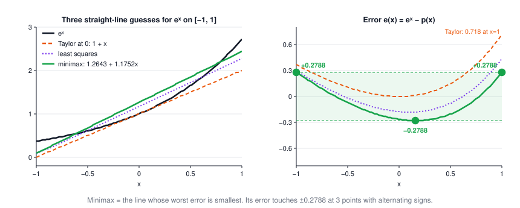
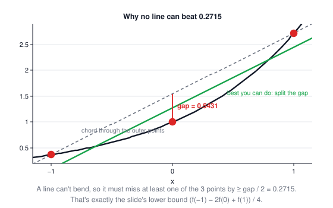
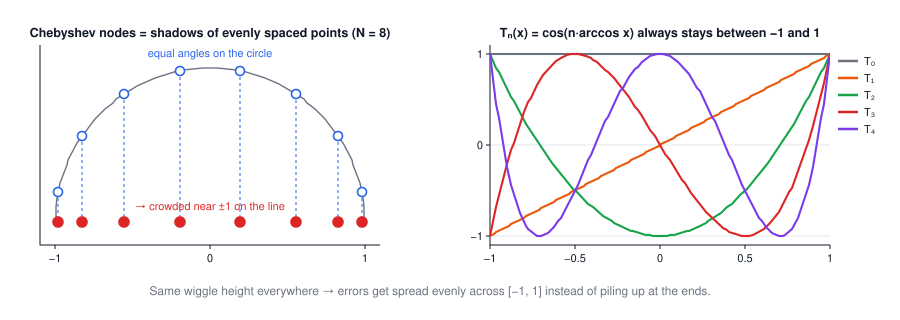
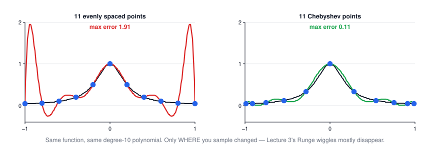
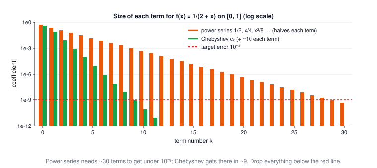

Lecture 4: Function Approximation
CSE 276C, Lecture 4 · Prof. Henrik Christensen · Numerical Recipes ch. 5. All numbers verified in
scripts/lec4/verify.py.The big picture
Interpolation (Lecture 3) answers "what's between my samples?". Approximation answers a different question: I can evaluate f anywhere — give me a cheaper stand-in I can trust everywhere. You choose where to sample, and it turns out where is most of the game. The lecture's arc: define the right error measure (the worst case, not the average) → characterize the optimal polynomial (equioscillation) → meet the family that achieves it almost automatically (Chebyshev) → use it to shrink lookup tables and truncate series.
| robotics problem | what f is | why approximate |
|---|---|---|
| trig / feedback laws on a microcontroller | sin, cos, atan2, eˣ | a 9-term polynomial beats a 30-term series and a huge table (your HW2 cos table is exactly this trade) |
| guaranteed tracking error | reference trajectory | L∞ bounds are promises about the worst moment, which is what safety specs ask for |
| model simplification | dynamics / sensor response | replace an expensive model with a low-degree polynomial plus a certified error band |
| arm trajectory sampling | joint path q(t) | sampling at Chebyshev points kills the end-of-interval wiggles of Lecture 3 |
1 · Why approximate instead of interpolate
Interpolation is a hard constraint: hit every sample exactly. But the samples were just the points you happened to have — and Lecture 3 showed that forcing a degree-20 polynomial through evenly spaced samples makes it worse between them (Runge). Approximation relaxes the constraint: never mind hitting samples, minimize the distance to f itself. The surprise of this lecture is that the two stories reconnect at the end: the best practical approximation is an interpolation — through the right points.
2 · The L∞ yardstick
Distance between f and an approximation p over an interval:
$$\lVert f - p\rVert_\infty \;=\; \max_{a\le x\le b}\,\lvert f(x)-p(x)\rvert, \qquad d(f,\pi_n) \;=\; \min_{p\,\in\,\pi_n}\, \lVert f - p\rVert_\infty$$| symbol | meaning |
|---|---|
| \(\lVert f-p\rVert_\infty\) | the worst miss anywhere in the interval (not the average miss — that's least squares, Lecture 2) |
| \(\pi_n\) | all polynomials of degree ≤ n |
| \(d(f,\pi_n)\) | how well degree n can possibly do — the minimax distance |
Weierstrass guarantees \(d(f,\pi_n)\to 0\) for any continuous f: polynomials can come arbitrarily close, if you allow the degree to grow. The question is how fast.
3 · The equioscillation theorem
How do you recognize the best polynomial when you see it? Chebyshev's characterization:
$$p^{*} \text{ is the best in } \pi_n \iff f - p^{*} \text{ attains } \pm\lVert f-p^{*}\rVert_\infty \text{ at } \ge n+2 \text{ points, alternating in sign}$$Intuition: if the error had one lonely worst peak, you could tilt p slightly to shave that peak without creating a bigger one elsewhere — so at the optimum the error must be pinned at both ends of its range, +max, −max, +max, … so many times that no degree-n adjustment can push all the peaks down at once (a degree-n polynomial can't out-wiggle n+2 alternations).
4 · Worked out fully: the best line for eˣ
The slides' running example: approximate \(f(x)=e^x\) on \([-1,1]\) by a line \(p(x)=a+bx\) (n = 1, so the theorem demands 3 alternating extreme points). The error \(e(x)=e^x-a-bx\) is convex, so its extremes are the two endpoints plus one interior minimum — exactly three, forced automatically.
Slope. Alternation with equal values at both endpoints means \(e(-1)=e(1)\):
$$e^{-1}-(a-b) = e^{1}-(a+b)\;\Rightarrow\; b=\frac{e-e^{-1}}{2}=1.1752$$The minimax slope is the average slope of f across the interval — the line "keeps up" with the function overall.
Interior point. The interior extreme is where the error is flat: \(e'(x_1) = e^{x_1}-b = 0 \Rightarrow x_1=\ln b = 0.16144\).
Height. Alternation between x = −1 and x₁ means \(e(-1)=-e(x_1)\), which solves to
$$a=\frac{e - b\,x_1}{2} = 1.2643, \qquad \lVert f-p^{*}\rVert_\infty = 0.2788 \;\text{ at } x=-1,\;0.16144,\;+1 \;(+,-,+)$$
Try to beat it yourself — drag a and b and watch the worst error:
Worked example: every number, verified (click to open)
\(b = \sinh(1) = (2.71828 - 0.36788)/2 = 1.17520\). \(x_1 = \ln 1.17520 = 0.16144\).
\(a = (e - b x_1)/2 = (2.71828 - 0.18972)/2 = 1.26428\). Errors:
\(e(-1) = 0.36788 - (1.26428 - 1.17520) = +0.27880\);
\(e(x_1) = 1.17520 - (1.26428 + 0.18972) = -0.27880\);
\(e(1) = 2.71828 - (1.26428 + 1.17520) = +0.27880\). Three touches, alternating — the certificate.
A Nelder–Mead search over all (a, b) lands on the same line to 5 decimals
(scripts/lec4/verify.py).
5 · Divided differences & the lower bound
The theorem certifies an answer once you have it. The slides also derive a floor — a number no line can beat — using Lecture 3's divided differences:
$$f[x_0,\dots,x_k] = \frac{f[x_1,\dots,x_k]-f[x_0,\dots,x_{k-1}]}{x_k-x_0}, \qquad f[x_0,\dots,x_k] = \sum_{i=0}^{k}\frac{f(x_i)}{w'(x_i)},\;\; w=\textstyle\prod(x-x_i)$$A degree-1 polynomial has zero second divided difference, so for any line p, on any 3 nodes, \(f[x_0,x_1,x_2] = (f-p)[x_0,x_1,x_2]\), and bounding each term gives
$$d(f,\pi_1)\;\ge\;\frac{\lvert f[x_0,x_1,x_2]\rvert}{\sum_i 1/\lvert w'(x_i)\rvert} \;\overset{x=(-1,0,1)}{=}\;\frac{f(-1)-2f(0)+f(1)}{4} = \frac{e - 2 + e^{-1}}{4} = 0.2715$$
Sanity check: 0.2715 ≤ 0.2788 ✓ — the floor sits just 2.6% under the true optimum. Three strategically chosen points already know almost everything about how hard the problem is.
6 · Chebyshev polynomials
The family that makes minimax practical — a cosine wearing a polynomial costume:
$$T_n(x) = \cos\!\big(n\arccos x\big), \qquad T_{n+1}(x) = 2x\,T_n(x) - T_{n-1}(x), \quad T_0 = 1,\; T_1 = x$$| property | statement | why it matters |
|---|---|---|
| bounded | \(\lvert T_n(x)\rvert \le 1\) on [−1,1] | equal ripple built in — every wiggle has the same height |
| zeros | \(x_k = \cos\frac{\pi(k+\tfrac12)}{N}\), k = 0…N−1 | the Chebyshev points — where you should sample |
| extrema | \(\cos\frac{\pi k}{N}\), values ±1 alternating | N+1 alternations: exactly the equioscillation pattern |
| orthogonal | \(\int_{-1}^{1}\frac{T_i T_j}{\sqrt{1-x^2}}dx = 0\) (i ≠ j), and discretely over the zeros | coefficients come from sums, not a linear solve — no Vandermonde, no 10¹⁶ condition number |
| extremal | leading coefficient \(2^{\,n-1}\); among monic degree-n polynomials, \(T_n/2^{n-1}\) has the smallest max on [−1,1] | this is the minimax property, stated about polynomials themselves |

The circle picture is the whole trick: in angle space \(\theta=\arccos x\), T_n is literally \(\cos n\theta\) — perfectly even ripples. Projecting the circle onto the line squeezes points toward the ends, and that extra end-density is precisely what cancels interpolation's end-of-interval blowup.
7 · Chebyshev approximation
To approximate f, sample it at the N zeros of \(T_N\) and compute coefficients by a plain sum (the discrete orthogonality doing the work of a matrix solve):
$$c_j = \frac{2}{N}\sum_{k=0}^{N-1} f(x_k)\,T_j(x_k), \qquad p(x) = \Big[\sum_{k=0}^{m-1} c_k T_k(x)\Big] - \tfrac12 c_0$$| symbol | meaning |
|---|---|
| \(x_k\) | zeros of \(T_N\): \(\cos\frac{\pi(k+1/2)}{N}\) |
| \(c_j\) | j-th Chebyshev coefficient; for smooth f they decay geometrically |
| \(m\le N\) | how many terms you keep — truncate where the \(c_j\) drop below your error budget |
| \(-\tfrac12 c_0\) | bookkeeping: the j = 0 sum double-counts, so half of \(c_0\) is subtracted |
Truncating after m terms leaves an error ≈ the first dropped term, \(c_m T_m(x)\) — and \(T_m\) oscillates evenly between ±1, so the error is spread evenly: automatically very close to minimax. Not exactly equal to it: for the eˣ line, Chebyshev gives \(1.2661 + 1.1303x\) with worst error 0.3219 — 15% above the true minimax 0.2788, at essentially zero effort. That trade (give up a few percent, skip the Remez iteration entirely) is why everyone uses Chebyshev in practice.

Play with where the samples go — the half-circle at the top shows the projection trick live:
8 · Any interval: domain warping
Everything above lives on [−1, 1]. For an arbitrary interval [a, b], change variables:
$$y = \frac{x - \tfrac12(b+a)}{\tfrac12(b-a)} \;\in\;[-1,1] \qquad\Longleftrightarrow\qquad x = \tfrac12(b-a)\,y + \tfrac12(b+a)$$Shift by the midpoint, scale by the half-width. Approximate \(g(y)=f(x(y))\) with Chebyshev machinery, then substitute back. Robotics version: your joint angle lives in [0, 2π], your cos table in [0, π/2] — warp first, fit second.
9 · Truncating power series
The slides close with the cheapest approximation of all: take a series you already know and cut it. For \(f(x) = \frac{1}{2+x}\) on [0, 1]:
$$\frac{1}{2+x} = \frac12 - \frac{x}{4} + \frac{x^2}{8} - \cdots = \sum_{n=0}^{\infty} \frac{(-1)^n x^n}{2^{n+1}}$$Each term is only half the previous one, so the cut-off error shrinks by 2 per term: reaching \(10^{-9}\) takes about 30 terms (the remainder bound \((1/2)^n\) crosses \(10^{-9}\) at n = 30; the measured error, helped by alternating cancellation, crosses at 29). Re-expand the same function in Chebyshev polynomials on the warped interval and the coefficients fall ~10× per term — the same \(10^{-9}\) now costs 9 terms. In your control loop that's a 3× cheaper evaluation for the identical guarantee.

Worked example: the slides' 6-step truncation recipe (click to open)
- Warp the interval to [−1, 1]: here x = (y+1)/2, so \(g(y) = \frac{1}{2+(y+1)/2} = \frac{2}{5+y}\).
- Pick N generously (say 60) and compute \(c_j\) at the \(T_N\) zeros by the sum formula.
- Look at the \(\lvert c_j\rvert\): 0.816, 0.083, 0.0083, 0.00084, … — dividing by ~9.9 each step.
- Keep terms until the first dropped one is under budget: \(\lvert c_9\rvert \approx 9\times10^{-10} < 10^{-9}\) → keep m = 9 terms, c₀…c₈.
- Evaluate p by the recurrence (never expand into powers of x — that re-introduces the ill-conditioning).
- Verify: measured max error with 9 terms = 1.0 × 10⁻⁹, with 8 terms = 9.9 × 10⁻⁹ (
verify.py). ✓
10 · Summary
- Approximation ≠ interpolation: minimize the worst error over the interval, not the error at fixed samples.
- The optimum has a signature: the error equioscillates — n+2 touches of ±ε with alternating signs. One lonely peak means you can still improve.
- Divided differences give certified lower bounds: for eˣ, no line beats 0.2715; the true best is 0.2788.
- Chebyshev polynomials are cosines in disguise — equal ripple is their native state, and sampling at their zeros makes interpolation nearly minimax (0.3219 vs 0.2788 for the line: 15% worse, zero iteration).
- Chebyshev-truncate your power series: same 10⁻⁹ promise, 9 terms instead of 30.
| approach | minimizes | cost | use it when |
|---|---|---|---|
| Taylor / power series cut | error at one point | free if you know the series | only near the expansion point |
| least squares (Lec 2) | average (L²) error | one linear solve | noisy data, average-case loss |
| true minimax (Remez) | worst (L∞) error, exactly | iterative exchange algorithm | you need the last few percent |
| Chebyshev fit | worst error, nearly | one sum per coefficient | the default — tables, embedded trig, model stand-ins |
⚠️ Typos in the slides to watch out for
- Equioscillation slide: "points at which the error is f(x) = p(x)" → should be f(x) − p(x) (the error attains ±max there, it isn't zero there — the zeros are between the extremes).
- Domain-warping slide: the map is printed as \(y = \frac{x - \frac12(b-a)}{\frac12(b-a)}\) → the numerator should subtract the midpoint \(\frac12(b+a)\), not the half-width. As printed it sends [a,b] to [−0.2, 1.8] for a=2, b=7 instead of [−1, 1] (checked in
verify.py). - The "30 terms vs 9 terms" example is stated for 1/(2+x) on [0, 1] (the warped fit) — on [−1, 1] itself the pole at −2 is closer and Chebyshev needs ~17 terms. The slide doesn't say the interval out loud; the numbers only work on [0, 1].
- "Chebyshev approximation … for periodic functions": T-expansions work for any continuous f on a finite interval — the cosine connection is a change of variables, not a periodicity requirement.